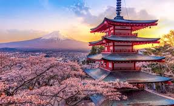
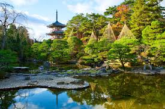
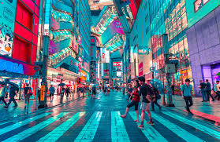

O Japão é um país fascinante que combina perfeitamente alta tecnologia e tradições milenares. Ao mesmo tempo que impressiona com o ritmo acelerado de metrópoles como Tóquio, o país preserva a serenidade de templos antigos e paisagens naturais icônicas. Essa harmonia reflete-se em uma sociedade profundamente guiada pelo respeito, pela disciplina e por uma rica identidade cultural que encanta o mundo inteiro.
Saiba mais sobre o Japão
Sendai é a maior cidade da região de Tōhoku, no norte do Japão, conhecida por combinar tradição, natureza e modernidade. Fundada pelo famoso samurai Date Masamune no século XVII, a cidade ganhou o apelido de “Cidade das Árvores” por suas avenidas arborizadas e parques bem cuidados. Além de seu valor histórico, Sendai é reconhecida por sua forte vida universitária, culinária típica — especialmente o gyūtan, língua bovina grelhada — e festivais tradicionais, como o Sendai Tanabata Festival, um dos mais famosos do país. A cidade também serve como porta de entrada para belas paisagens naturais e águas termais da região de Miyagi.
Saiba mais sobre Sendai
Tóquio é a capital do Japão e uma das maiores metrópoles do mundo, famosa por sua mistura única entre tradição e tecnologia. Na cidade, templos históricos convivem com arranha-céus modernos, bairros iluminados por letreiros de neon e uma cultura vibrante que influencia moda, gastronomia e entretenimento em todo o planeta. Além de ser o principal centro econômico do país, Tóquio oferece atrações icônicas como o cruzamento de Shibuya, a Tokyo Tower e o tradicional templo Sensō-ji. A cidade também é conhecida por sua eficiência, segurança e pela diversidade de experiências culturais que encantam visitantes do mundo inteiro.
Saiba mais sobre Toquio